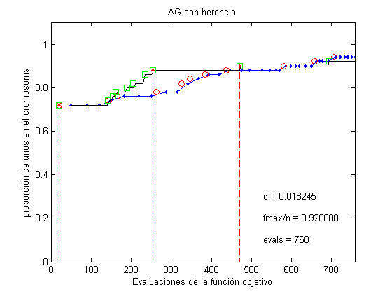

Contents
Herencia
Este script muestra la forma de utilizar herencia junto con inyecciones para disminuir el número de evaluaciones de la función objetivo.
Vamos a optimizar la función onemax; ésta es una función cuya evaluación es el número de unos que tiene el cromosoma. Tiene una apariencia difícil, pero es realmente sencilla para un AG porque tiene una estructura que puede explotar. Ésta es una gráfica de onemax para cromosomas de longitud N.
N = 6; t = 0:1:2^N-1; clear f; for i=1:length(t), f(i)=onemax(t(i)); end plot(t,f,'.-',t,f,'or','MarkerFaceColor','r','MarkerSize',4) axis([-0.1 2^N -1 N+0.1]) set(gca,'XTick',0:2^(N-3):2^N) title(sprintf('función uno-max para N=%d',N)) xlabel('x') ylabel('f(x)')

Un AG Simple sobre onemax
Optimizamos la función onemax con un algoritmo genético de cromosomas binarios de 30 bits, pm=0.0 y pc=0.7. Utilizamos un AG simple con selección de torneo de tamaño 2 y lo corremos por 100 generaciones. La población converge al óptimo.
N = 50; %rand('state',3); %1,3,5 producen resultados agradables fcn = @onemax; n = 50; generaciones = 100; p = population('integer',N,0.0,0.7); p = random(p,n); p0 = p; p = evaluate(p,fcn); best = get(p,'best'); evals = get(p,'evals'); B = [best.evals evals best.fitness/sum(N)]; for i=1:generaciones p = tournament(p); p = crossover(p); p = mutation(p); p = evaluate(p,fcn); best = get(p,'best'); evals = get(p,'evals'); B = [B;best.evals evals best.fitness/sum(N)]; plot(B(:,2),B(:,3),'.-',B(:,1),B(:,3),'ro') axis([0 evals 0 1.1]) title('AG sin herencia y con selección de torneo') xlabel('Evaluaciones de la función objetivo') ylabel('proporción de unos en el cromosoma') d = convergence(p,'p'); str0 = sprintf('d = %f',d); str1 = sprintf('generación = %d',i); str2 = sprintf('fmax/n = %f',best.fitness/n); text(evals*0.70,0.4,str0) text(evals*0.70,0.3,str1) text(evals*0.70,0.2,str2) str3 = sprintf('evals = %d',evals); text(evals*0.70,0.1,str3) pause(0.01) end totalEvals = get(p,'evals');
Un AG con herencia sobre onemax
Ahora utlizamos un algoritmo genético con herencia e inyecciones
fcn = @onemax; p = p0; % Se usa la misma población inicial p = startInheritance(p); p = evaluate(p,fcn); % Se evalúa la primera generación best = get(p,'best'); evals = get(p,'evals'); C = [best.evals evals best.fitness/sum(N)]; Iny = [best.evals best.fitness/sum(N)]; while 1 if d < 0.01 % realizar inyección si se tiene diversidad menor a 0.01 p = injection(p,0.1,fcn); best = get(p,'best'); Iny = [Iny;best.evals best.fitness/sum(N)]; end p = tournament(p); p = crossInheritance(p); p = mutation(p); p = evaluateInheritance(p,fcn); best = get(p,'best'); evals = get(p,'evals'); C = [C;best.evals evals best.fitness/sum(N)]; plot(B(:,2),B(:,3),'.-',B(:,1),B(:,3),'ro',... C(:,2),C(:,3),'k-',C(:,1),C(:,3),'gs') axis([0 totalEvals 0 1.1]) title('AG con herencia') xlabel('Evaluaciones de la función objetivo') ylabel('proporción de unos en el cromosoma') d = convergence(p,'p'); str1 = sprintf('d = %f',d); text(totalEvals*0.70,0.3,str1) str2 = sprintf('fmax/n = %f',best.fitness/n); text(totalEvals*0.70,0.2,str2) str3 = sprintf('evals = %d',evals); text(totalEvals*0.70,0.1,str3) if length(Iny)>1 hold on %plot(Iny(:,1),Iny(:,2),'r.') stem(Iny(:,1),Iny(:,2),'r.--') hold off end pause(0.01) if get(p,'evals')>=totalEvals break end end